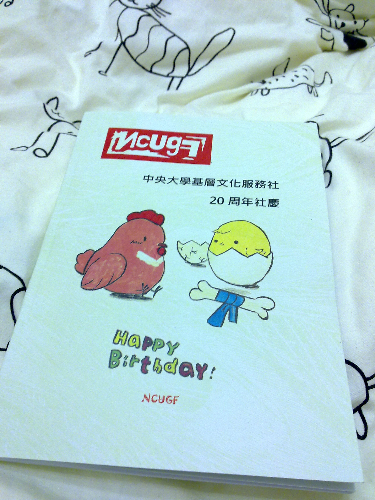
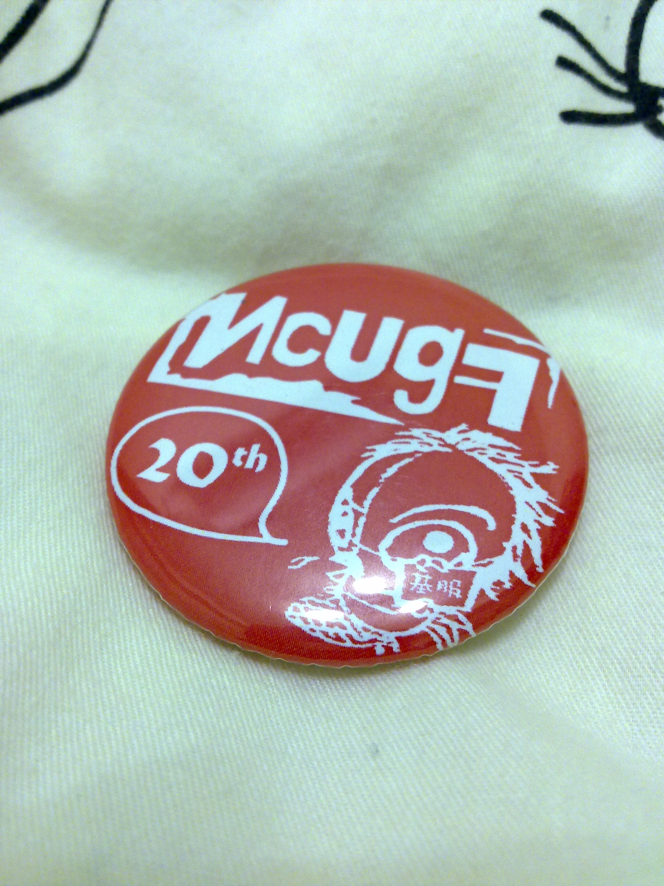
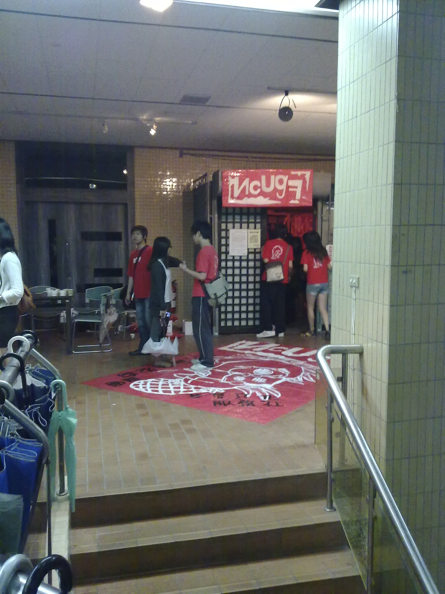
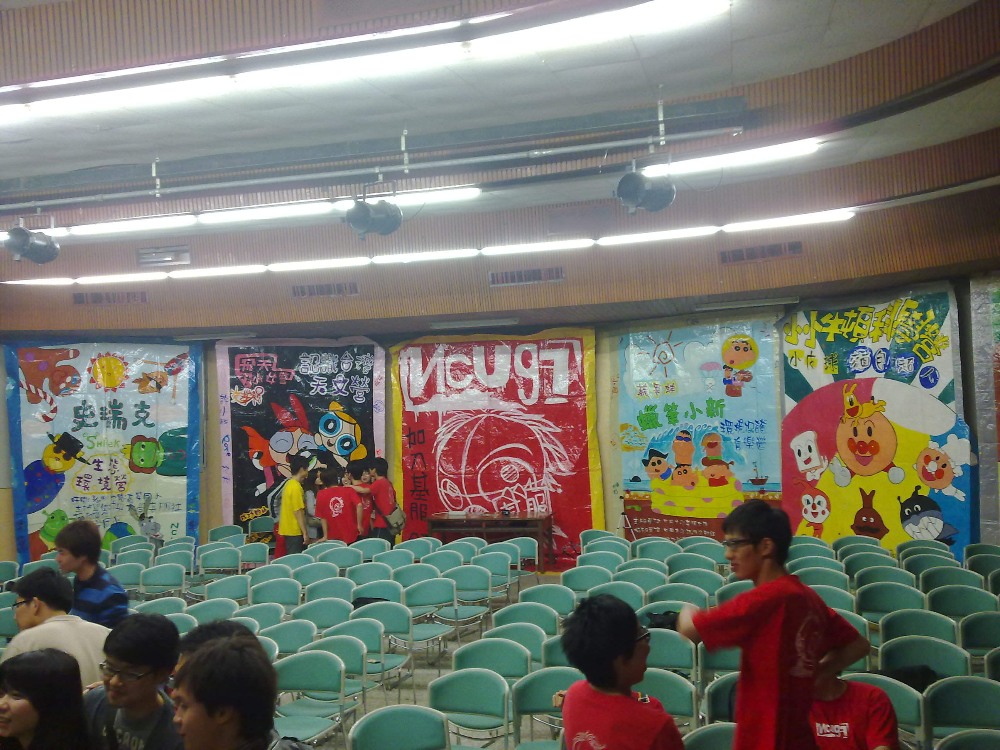
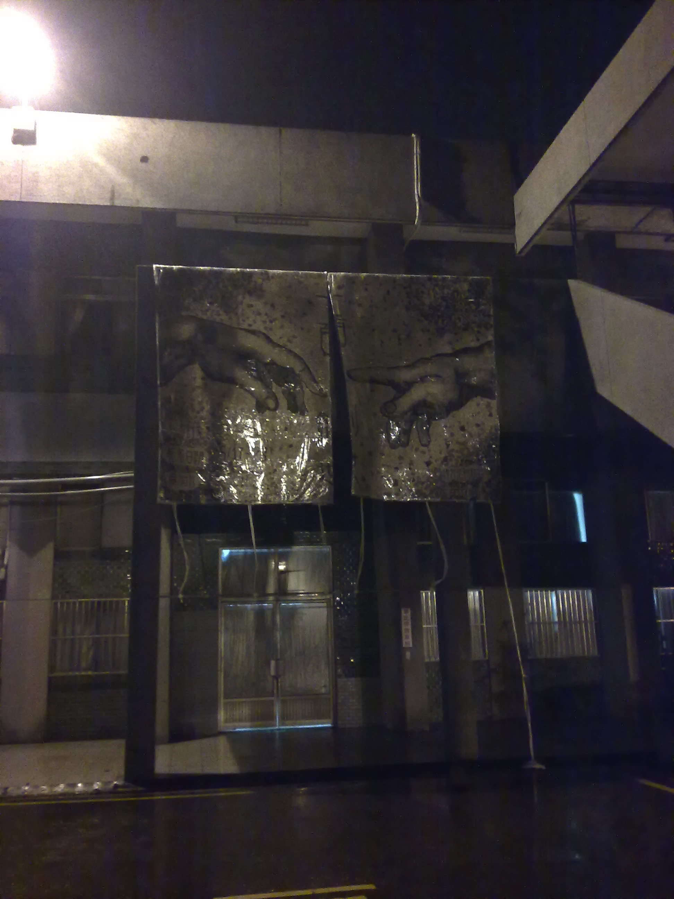
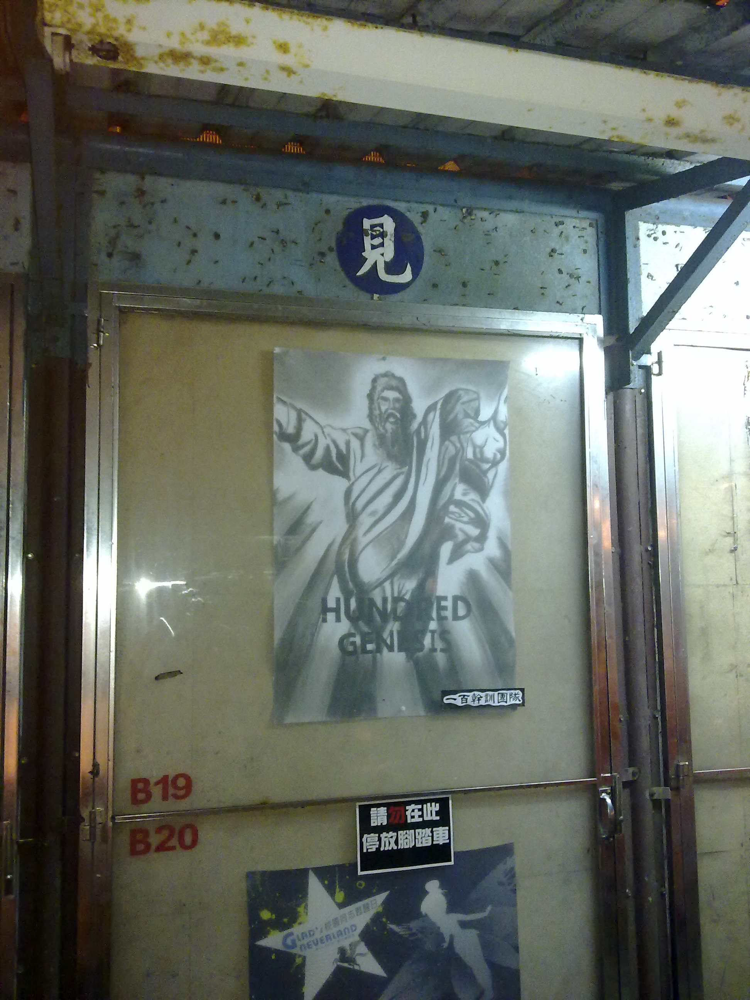

因為一直下雨，所以來補一下社慶遊記。
從新竹出發，很巧的是在公車站遇到廖宇凡他們。大餅還是一樣好笑。
到了中央，發現新蓋好的文三館！我也是第一次看到 XD。大家都很懷念冷颼颼的空氣，有種「啊！這就是中央啊！」的感覺。
到了遊藝館，突然發現在前面的是范媽！於是我們就決定先閃躲一下去上廁所 XDDD。（大餅還從下面大叫在窗戶旁的品客 XD）
進入遊藝館，竟然要跳個帶動跳才能進去 XD。大餅很嗨的跳了喔哈，學弟妹大概也嚇一大跳哈哈哈哈哈。

報到完可以拿到紀念手冊，科科。
接著是遊藝館的大地遊戲！但是上到二樓就看到余政彥帶假髮穿著小禮服露背快嚇死了，張瘀青還被逼到牆角 XDDDDDD
大地總共有三關，第一關是比手畫腳+看圖說話，第二關喝水傳話，第三關瞎拼 ABC。大餅每一關都有梗，還馬上就想到小隊呼，真是太好笑了 XDDDDD。第三關關主表哥是小憨的弟弟，長的還蠻像的。

闖完大地遊戲就可以拿到二十週年紀念徽章！
晚餐吃自助餐，好擠好擠。99 級的很可憐 被我們搶走位置 XD。誰叫他們是最年輕的老骨頭，哈哈哈哈。不過 98 級的也只有我跟大鳥有點桑心。

進入小禮堂，非常懷念的感覺啊！尤其是燈暗下來，只剩下紅布幕的時候。也就是一開始放的那張照片。
表演的順序記不太得了 XD。開場是令人懷念的夢不落香舞，然後有火球火棍劇(?)。喔哈帶動跳，這首好像變成經典了 XD。大四老雞的廣播劇，兩個假裝社對的卡啦 OK(?!)。舞棍阿伯超好笑 XDDDD。最後是痞子的魔術秀 (其實我覺得安排這個表演有點不太適合 XD)。對了，還有串場，中間的女生演起來超像謝依恆的，哈哈哈。後面還有很多骨灰級的上台跟大家分享心得，老骨頭都很愛秀 XDDDD
最令人印象深刻的就是范媽吧，第一次看她上台講這麼多話，真是令人意外 XD。最後還拿著存款簿，廖宇凡還以為要被婊了 XDDDDD
結束後當然就是拍照時間啦！

場地依舊是拿巨海來佈置～
飛天小女警那張下面的人是一群小雞圍著傳說中的果凍蜂姊姊拍照 XDDDDD。離開小禮堂都十點了，決定先去宵夜街買東西吃。

在一餐前看到百幹的巨海！切成兩張感覺還不錯，不過放在這個位置不知道會不會悲劇。

還有普通的宣傳海報。主題是創世紀，好像是個蠻符合這次一百年的營包啊！希望到時候可以看到一些有趣的東西！
令人懷念的宵夜街，買了五二的葡萄柚綠跟霸王裸體雞！真是一飽口福啊～霸王老闆娘還記得我，真是意外。曾宅宅還來偷喝我的葡萄柚綠。
最後叫了傳說中的小黑到火車站，一路闖紅燈飆快車，有種終極殺陣的的感覺 XDDD。司機雖然長了壞人臉但是還蠻幽默的哈哈哈哈。然後坐上了倒數第二還第三班火車回家。
這次最大的收穫大概就是看到一堆有活力的老骨頭吧哈哈哈，還是一樣好笑一樣很嗨 XD。以前那種感覺好像又回來了～
期待下次的 25th 社慶囉 :)